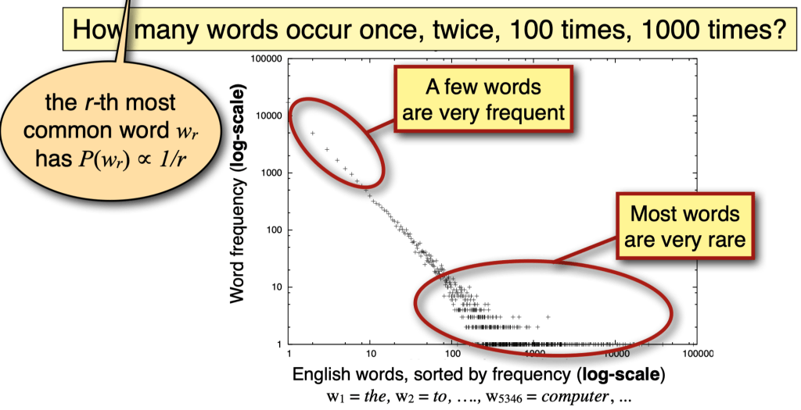

Tokenization
Contents
Tokenization#
Overview#
NLP systems have three main components that help machines understand natural language:
Tokenization: Splitting a string into a list of tokens.
Embedding: Mapping tokens to vectors.
Model: A neural network that takes token vectors as input and outputs predictions.
Tokenization is the first step in the NLP pipeline.
Tokenization is the process of splitting a string into a list of tokens.
For example, the sentence “I like to eat apples” can be tokenized into the list of tokens
["I", "like", "to", "eat", "apples"].The tokens can be words, characters, or subwords.
What is Tokenization?#
Tokenization is the process of representing a text in smaller units called tokens.
In a very simple case, we can simply map every word in the text to a numerical index.
For example, the sentence “I like to eat apples” can be tokenized into the list of tokens:
["I", "like", "to", "eat", "apples"].Then, each token can be mapped to a unique index, such as:
{"I": 0, "like": 1, "to": 2, "eat": 3, "apples": 4}.There are more linguistic features to consider when tokenizing a text, such as punctuation, capitalization, and so on.
Why do we need tokenization?#
“How can we make a machine read a sentence?”
Machines don’t know any language, nor do they understand sounds or phonetics.
They need to be taught from scratch.
The first step is to break down the sentence into smaller units that the machine can process.
Tokenization determines how the input is represented to the model.
This decision has a huge impact on the performance of the model.
How do we identify words in text?#
For a language like English, this seems like a simple task. We can simply split the text by spaces.
A word is any sequence of alphabetical characters between whitespaces that’s not a punctuation mark?
However, there are many cases where this is not true.
What about contractions?
“I’m” is a single word, but it is split into two tokens.
What about abbreviations?
“U.S.” is a single word, but it is split into two tokens.
What about hyphenated words?
“self-driving”, “R2-D2” are single words, but they are split into two tokens.
What about complex names?
“New York” is a single word, but it is split into two tokens.
What about languages like Chinese that have no spaces between words?
Words aren’t just defined by blanks#
Problem 1: Compounding
“ice cream”, “website”, “web site”, “New York-based”
Problem 2: Other writing systems have no blanks
Chinese: 我开始写⼩说 = 我 开始 写 ⼩说 (I start(ed) writing novel(s))
Problem 3: Contractions and Clitics
English: “doesn’t” , “I’m” ,
Italian: “dirglielo” = dir + gli(e) + lo (tell + him + it)
Tokenization Standards#
Any actual NLP system will assume a particular tokenization standard.
NLP systems are usually trained on particular corpora (text datasets) that everybody uses.
These corpora often define a de facto standard.
Penn Treebank 3 standard:
Input:
"The San Francisco-based restaurant," they said, "doesn’t charge $10".Output:
“_ The _ San _ Francisco-based _ restaurant _ , _” _ they_ said* ,* "_ does _ n’t _ charge_ $_ 10 _ " _ . _
What about sentence boundaries?#
How can we identify that this is two sentences?
Mr. Smith went to D.C. Ms. Xu went to Chicago instead.
We can use a period to identify the end of a sentence.
However, this is not always true.
Abbreviations, such as “Mr.”, “D.C.”, “Ms.”, “U.S.”, “etc.” can be followed by a period.
How many sentences are in this text?
"The San Francisco-based restaurant," they said, "doesn’t charge $10".
Answer: just one, because the comma is not a sentence boundary.
Similarly, we typically treat this also just as one sentence:
They said: ”The San Francisco-based restaurant doesn’t charge $10".
Spelling variants, typos, etc.#
The same word can be written in different ways:
with different
capitalizations:lowercase “cat” (in standard running text)
capitalized “Cat” (as first word in a sentence, or in titles/headlines),
all-caps “CAT” (e.g. in headlines)
with different abbreviation or hyphenation styles:
US-based, US based, U.S.-based, U.S. based
US-EU relations, U.S./E.U. relations, …
with spelling variants (e.g. regional variants of English):
labor vs labour, materialize vs materialise,
with typos (teh)
How many different words are there in English?#
Counting words: tokens vs. types#
When counting words in text, we distinguish between word types and word tokens:
The vocabulary of a language is the set of (unique) word types:
V = {a, aardvark, …., zyzzva}
The tokens in a document include all occurrences of the word types in that document or corpus
The frequency of a word (type) in a document
= the number of occurrences (tokens) of that type
How large is the vocabulary of English (or any other language)?
Vocabulary size = the number of distinct word types
Google N-gram corpus: 1 trillion tokens, 13 million word types that appear 40+ times
You may have heard statements such as:
adults know about 30,000 wordsyou need to know at least 5,000 words to be fluent
If you count words in text, you will find that …
a few words (mostly closed-class) are very frequent (the, be, to, of, and, a, in, that,…)
most words (all open class) are very rare.
even if you’ve read a lot of text, you will keep finding words you haven’t seen before.
Zipf’s law: the long tail#
In a natural language:
A small number of events (e.g. words) occur with high frequency
A large number of events occur with very low frequency

Implications of Zipf’s Law for NLP#
The good:
Any text will contain a number of words that are very common.
We have seen these words often enough that we know (almost) everything about them.
These words will help us get at the structure (and possibly meaning) of this text.
The bad:
Any text will contain a number of words that are rare.
We know something about these words, but haven’t seen them often enough to know everything about them.
They may occur with a meaning or a part of speech we haven’t seen before.
The ugly:
Any text will contain a number of words that are unknown to us.
We have never seen them before, but we still need to get at the structure (and meaning) of these texts.
Dealing with the bad and the ugly#
NLP systems need to be able to generalize from the known to the unknown.
There are two main strategies:
Linguistic knowledge
a finite set of grammatical rules is enough to generate an infinite number of languages
Machine learning or statistical methods
learn representations of words from large amounts of data that often work well for unseen words
How do we represent words?#
Option 1: Words are atomic symbols
Each (surface) word is a unique symbol
Add some generalization rules to map different surface forms to the same symbol
Normalization: map all variants of the same word (form) to the same canonical variante.g. lowercase everything, normalize spellings, perhaps spell-check)
Lemmatization: map each word to its lemma (esp. in English, the lemma is still a word in the language, but lemmatized text is no longer grammatical)Stemming: remove endings that differ among word forms (no guarantee that the resulting symbol is an actual word)
Option 2: Represent the structure of each word
"books" => "book N pl" (or "book V 3rd sg")
This requries a morphological analyzer
The output is often a lemma (e.g. “book”) and morphological features (e.g. “N pl” for noun plural, “V 3rd sg” for verb 3rd person singular)
This is particularly useful for languages with rich morphology (e.g. Turkish, Finnish, Hungarian, etc.)
Less useful for languages with little morphology (e.g. English, German, etc.)
How do we represent unknown words?#
Many NLP systems assume a fixed vocabulary, but still have to handle out-of-vocabulary (OOV) words.
Option 1: the UNK token
Replace all rare words (with a frequency at or below a given threshold, e.g. 2, 3, or 5) in your training data with an UNK token (UNK = “Unknown word”).
Replace all unknown words that you come across after training (including rare training words) with the same UNK token
Option 2: substring-based representations
Often used in neural models
Represent (rare and unknown) words [“Champaign”] as sequences of characters [‘C’, ‘h’, ‘a’,…,’g’, ’n’] or substrings [“Ch”, “amp”, “ai”, “gn”]
Byte Pair Encoding (BPE): learn which character sequences are common in the vocabulary of your language, and treat those common sequences as atomic units of your vocabulary
Which words appear in this text?
Of course he wants to take the advanced course too. He already took two beginners’ courses.
Actual text doesn’t consist of dictionary entries:
wants is a form of want
took is a form of take
courses is a form of course
Linguists distinguish between
the (surface) forms that occur in text: want, wants, beginners’, took,…
and the lemmas that are the uninflected forms of these words: want, beginner, take, …
In NLP, we sometimes map words to lemmas (or simpler “stems”), but the raw data always consists of surface forms
How many different words are there?#
Inflection creates different forms of the same word:
Verbs: to be, being, I am, you are, he is, I was,
Nouns: one book, two books
Derivation creates different words from the same lemma:
grace ⇒ disgrace ⇒ disgraceful ⇒ disgracefully
Compounding combines two words into a new word:
cream ⇒ ice cream ⇒ ice cream cone ⇒ ice cream cone bakery
Word formation is productive:
New words are subject to all of these processes: Google ⇒ Googler, to google, to ungoogle, to misgoogle, googlification, ungooglification, googlified, Google Maps, Google Maps service,…
Inflectional morphology in English#
Verbs:
Infinitive/present tense: walk, go
3rd person singular present tense (s-form): walks, goes
Simple past: walked, went
Past participle (ed-form): walked, gone
Present participle (ing-form): walking, going
Nouns:
Common nouns inflect for number: singular (book) vs. plural (books)
Personal pronouns inflect for person, number, gender, case: I saw him; he saw me; you saw her; we saw them; they saw us.
Derivational morphology in English#
Nominalization:
V + -ation: computerization
V+ -er: killer
Adj + -ness: fuzziness
Negation:
un-: undo, unseen, …
mis-: mistake,…
Adjectivization:
V+ -able: doable
N + -al: national
Morphemes: stems, affixes#
dis-grace-ful-ly
prefix-stem-suffix-suffix
Many word forms consist of a stem plus a number of affixes (prefixes or suffixes)
Exceptions: Infixes are inserted inside the stem Circumfixes (German gesehen) surround the stem
Morphemes: the smallest (meaningful/grammatical) parts of words.
Stems (grace) are often
free morphemes. Free morphemes can occur by themselves as words.Affixes (dis-, -ful, -ly) are usually
bound morphemes. Bound morphemes have to combine with others to form words.
Morphemes and morphs
The same information (plural, past tense, …) is often expressed in different ways in the same language.
One way may be more common than others, and exceptions may depend on specific words:
Most plural nouns: add -s to singular: book-books, but: box-boxes, fly-flies, child-children
Most past tense verbs add -ed to infinitive: walk-walked, but: like-liked, leap-leapt Such exceptions are called
irregular word forms
Linguists say that there is one underlying morpheme (e.g. for plural nouns) that is “realized” as different “surface” forms (morphs) (e.g. -s/-es/-ren)
Allomorphs: two different realizations (-s/-es/-ren) of the same underlying morpheme (plural)
“Surface”?
This terminology comes from Chomskyan Transformational Grammar.
Dominant early approach in theoretical linguistics, superseded by other approaches (“minimalism”).
Not computational, but has some historical influence on computational linguistics (e.g. Penn Treebank)
“Surface” = standard English (Chinese, Hindi, etc.).
“Surface string”= a written sequence of characters or words
vs. “Deep”/“Underlying” structure/representation:
A more abstract representation.
Might be the same for different sentences/words with the same meaning.
Tokenization#
Input:#
A set of documents (e.g. text files), \(D\)
Output (tokens):#
A sequence, \(W\) , containing a list of tokens – words or word pieces for use in natural language processing
Output (n-grams):#
A matrix, \(X\), containing statistics about word/phrase frequencies in those documents.